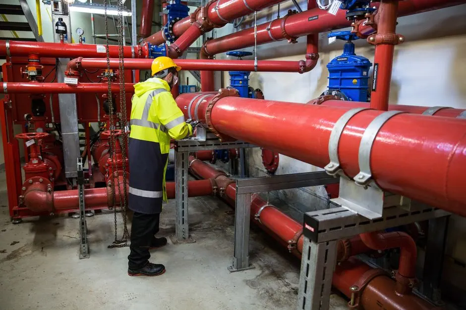

Common causes of low water pressure in Arlington Heights homes
Weak showers and slow faucets usually trace back to a handful of fixable problems. Here are the real causes of low water pressure in Arlington Heights homes.

Low water pressure in an Arlington Heights home almost always comes from one of five sources: a failing pressure regulator, corroded galvanized pipes, mineral scale blocking a fixture or cartridge, a partially closed or broken shutoff valve, or a municipal supply issue on your block. The good news is that four of those five are fixable the same day. The fifth just needs a phone call to the village. What follows is how we actually diagnose each one, what it costs in 2026, and when it makes sense to stop guessing and call us.
We are Five Star Plumber LLC, and we run pressure diagnostics across Arlington Heights every week - from the older bungalows near Recreation Park to the newer builds off Palatine Road. If you want the short version of what we do, our Plumbing Arlington Heights IL page covers the full range of residential and commercial work.
What low water pressure causes Arlington Heights IL homeowners actually face
Low water pressure causes Arlington Heights IL residents the most grief when they show up as a weak shower in the morning or a faucet that takes 40 seconds to fill a coffee pot. Water pressure problems in Arlington Heights, Illinois usually fall into two buckets: whole-house pressure loss (every fixture is weak) or single-fixture loss (one tap or one shower head is the problem).
Whole-house loss points to the main line, the regulator, or the supply pipes. Single-fixture loss points to the fixture itself - a clogged aerator, a scaled cartridge, or a failing shutoff. Knowing which bucket you are in cuts the diagnostic time in half.
Normal residential water pressure in this area runs between 40 and 60 psi. Anything under 40 psi and you will feel it in the shower. Anything over 80 psi and you are risking burst supply lines and premature water heater failure. We measure both static pressure and flowing pressure, because a system can read 55 psi at rest and drop to 28 psi the moment two fixtures run at once - that is a supply problem, not a fixture problem.
Why does my water pressure drop in only one fixture?
When the pressure drop is isolated to one fixture, the cause is almost always at that fixture - not in your main line. Low water pressure in shower Arlington Heights IL homeowners describe as a "weak spray" is usually a clogged shower cartridge or a shower head scaled up with calcium. Both are cheap fixes.
Here is the order we check, from simplest to most involved:
- Aerator screen. Unscrew the tip of the faucet. If it is packed with white grit, that is your whole problem. Clean it or replace it for a few dollars.
- Shower head. Soak it in white vinegar overnight. If flow returns, the head was scaled, not the plumbing.
- Cartridge or valve. A worn cartridge restricts hot or cold flow. We replace cartridges on most major brands the same visit.
- Angle stop. The shutoff valve under the sink can fail half-closed. That is a 20-minute repair.
If two or more fixtures on the same floor are weak, the problem is upstream - usually a branch line or the main. If it is one bathroom only, we look at the shared supply line feeding that bathroom. Our bathroom plumber Arlington Heights team handles this diagnostic daily, and it is rarely the expensive answer homeowners fear.
A failing water pressure regulator is the most common whole-house culprit
A water pressure regulator is a bell-shaped brass valve on your main line that steps incoming municipal pressure down to a safe level for your home. When it fails, it usually fails in one of two directions: it drops your house pressure to 20-30 psi, or it lets full street pressure through and you start hearing water hammer and seeing drips at every joint.
Regulators last 10 to 15 years in this region. If yours is original to a 1990s build, it is on borrowed time. Water pressure regulator replacement Arlington Heights homeowners schedule with us typically runs $250 to $450 in 2026, including the part and the labor. That is a one-visit job - we shut off the main, swap the regulator, and re-pressurize the house in about 90 minutes.
Two signs it is the regulator and not something else: your pressure is low at every fixture at once, and it does not improve when neighbors are not using water. If the pressure recovers at 10 p.m. when the block quiets down, that is more likely a supply-side issue than a regulator failure.
Galvanized and corroded pipes inside older Arlington Heights homes
Galvanized steel supply pipes are still in service in a meaningful number of Arlington Heights homes built before 1960, particularly in the older blocks near downtown and around the historic districts. Galvanized pipe rusts from the inside out. By the time you notice low water flow Arlington Heights IL residents complain about, the interior diameter of the pipe may be reduced by 50 to 70 percent.
You can often confirm this without opening a wall. Look at the color of the water when you first turn on a tap after it has sat overnight. Brown or rust-tinted water that clears after 30 seconds is a strong signal of internal corrosion. So is a pressure reading that drops sharply when you open two fixtures at once.
There is no cleaning fix that lasts. Once galvanized pipe is this far gone, the real answer is replacement. Our repiping services Arlington Heights IL team replaces galvanized supply lines with PEX or copper, usually in two to four days for a typical 1,400-square-foot home. Most homeowners see pressure return to the 50-60 psi range immediately after the swap.
Mineral scale, sediment, and hard water in the 60005 area
Arlington Heights water is moderately hard - roughly 7 to 9 grains per gallon depending on the source blend. That hardness leaves calcium and magnesium deposits inside water heaters, faucet cartridges, and shower valves. Over five to seven years, those deposits narrow the flow path and you feel it as reduced pressure.
If you want to know how to fix low water pressure Arlington Heights 60005 homeowners deal with repeatedly, the answer often starts with treating the water, not just the fixture. A whole-house softener or filtration setup stops the scale from forming in the first place. We install and service both - our water softener service Arlington Heights covers everything from a new softener to a resin tank replacement.
Sediment is a separate issue. If your water heater is more than eight years old and you have never flushed it, there is likely an inch or more of mineral sludge sitting on the bottom of the tank. That sludge reduces hot water capacity and can restrict flow at the hot side of every fixture. An annual flush - about $150 to $200 in 2026 - prevents it.
How do I fix low water pressure in Arlington Heights, Illinois?
Fix low water pressure in Arlington Heights, Illinois by isolating whether the problem is whole-house or single-fixture, then working from the cheapest cause to the most expensive. Most homeowners can rule out the first two causes in under 10 minutes with a pressure gauge and a bucket.
Here is the sequence we walk customers through on the phone:
- Test the pressure. A $15 hose-bib gauge from any hardware store tells you your static psi in 30 seconds.
- Check the regulator. If static pressure is under 40 or over 80, the regulator is the prime suspect.
- Isolate the fixture. Clean the aerator, soak the shower head, and see if flow returns.
- Look at the water color. Rusty first-draw water points to corroded galvanized pipe.
- Check with neighbors. If they have the same problem, call the Village of Arlington Heights water department before you call a plumber.
If steps one through five do not solve it, the issue is inside the walls or under the slab. That is where a camera inspection and a proper diagnostic visit pay for themselves. We handle water pressure repair Arlington Heights homeowners need across the whole village, and we will tell you honestly when the fix is a $40 part versus a $4,000 repipe.
Common mistakes we see homeowners make
The most expensive mistake is turning up the pressure at the regulator without checking the rest of the system. Cranking a regulator to 90 psi to "fix" a weak shower will blow out supply lines, toilet fill valves, and the water heater's pressure relief valve. We have seen it cause a second-floor flood in a home near Hasbrook Park.
Other mistakes we run into regularly:
- Replacing the water heater to fix a pressure problem. A new tank will not fix a clogged line or a bad regulator.
- Ignoring a slow drip under the sink. That drip is often the first sign of a failing angle stop that will eventually restrict flow or burst.
- Using chemical drain cleaner on a slow drain. It eats the pipe from the inside and makes the eventual repair worse. Our drain cleaning Arlington Heights IL team clears the line mechanically and tells you what caused the blockage.
- Assuming the city is at fault. Municipal supply issues are real, but they affect the whole block. If your neighbors have normal pressure, the problem is on your side of the meter.
When to call a professional
Call us when the pressure gauge reads under 40 psi at the hose bib, when two or more fixtures are weak at the same time, or when you see rust-colored water on the first draw of the morning. Those three signs point to problems that will not resolve on their own.
We also want the call when you have already replaced a faucet cartridge or a shower head and the pressure is still low. At that point, the restriction is upstream and guessing gets expensive. Five Star Plumber LLC runs a full diagnostic - static pressure, flowing pressure, water color, and a camera look at the main if needed - so you get a straight answer on the first visit instead of a series of experiments.
One more thing worth saying: if you are on a street where the village is doing water main work, wait 24 hours before calling anyone. Pressure fluctuations during main repairs are normal and temporary.
Frequently Asked Questions
What causes low water pressure in Arlington Heights IL?
The four most common causes are a failing pressure regulator, corroded galvanized supply pipes in pre-1960 homes, mineral scale in fixtures and cartridges, and a partially closed shutoff valve. Municipal supply issues affect whole blocks, not single homes. A pressure gauge reading under 40 psi points to a whole-house cause rather than a fixture problem.
How do I fix low water pressure in Arlington Heights, Illinois?
Start with a hose-bib pressure gauge. If static pressure is below 40 psi, the regulator or supply line is the problem and a plumber should handle it. If pressure is normal but one fixture is weak, clean the aerator or replace the cartridge. Most single-fixture fixes take under 30 minutes.
Can a plumber fix low water pressure in Arlington Heights IL?
Yes. A licensed plumber can replace a failed pressure regulator in about 90 minutes, clear scale from cartridges and valves, and repipe corroded galvanized lines. Regulator replacement typically runs $250 to $450 in 2026. Repiping a full home runs higher and takes two to four days.
Is low water pressure a plumbing problem in Arlington Heights?
Usually yes. Roughly eight out of ten low-pressure calls we run in Arlington Heights trace back to something on the homeowner's side of the meter - regulator, pipes, or fixtures. The other two are municipal supply issues that affect the entire block and get resolved by the village water department.
Why is my shower pressure low but my sinks are fine?
A single weak shower almost always means a scaled shower head or a failing cartridge, not a supply problem. Soak the head in vinegar overnight. If flow does not return, the cartridge or the shower valve needs replacement - a job our shower and bathtub services team handles in one visit.
Get help with Plumbing in Arlington Heights
If your pressure has been dropping for weeks and you are tired of guessing, we will come out, measure it properly, and tell you exactly what is wrong before any work starts. Call Five Star Plumber LLC at (224) 643-9856 and we will get your water pressure back where it belongs.